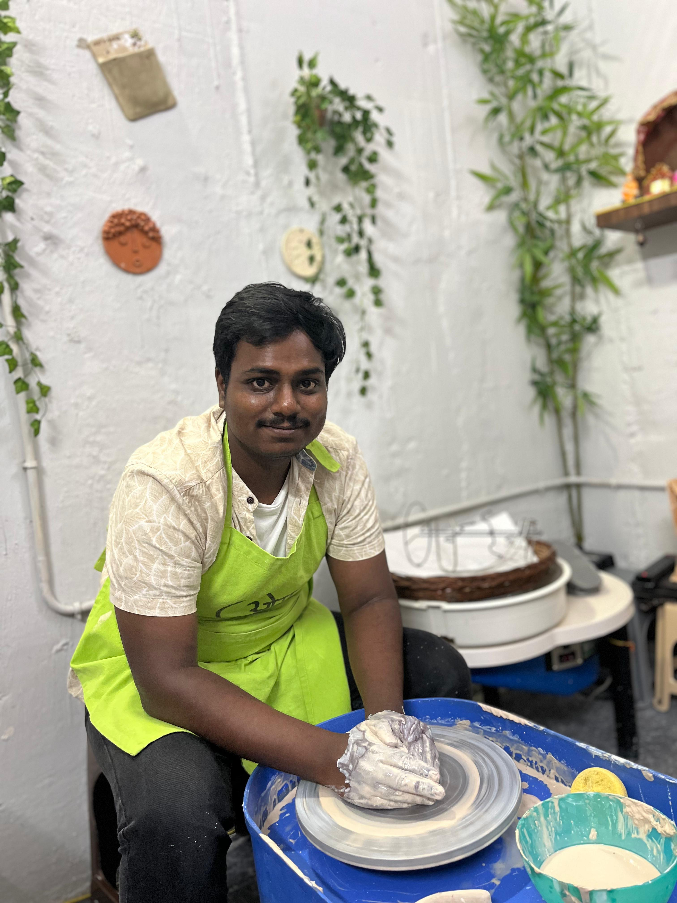

Sushant Kumar
Data Analyst and Master's Student in Intelligent Systems Network at University of Duisburg-Essen, with 2+ years of experience in Python, SQL, and Data Visualization — based in Duisburg, Germany. I transform complex datasets into clear, actionable insights.

About Me
I'm Sushant Kumar, a passionate data analyst and Master's student in Intelligent Systems Network at the University of Duisburg-Essen, based in Duisburg (Germany). With 2+ years experience in Python, SQL, Excel, I excel at turning complex data into actionable insights.
During internships at Trainity, PsyLiq, and MedTourEasy, I created dynamic dashboards, conducted regression analyses, and performed EDA. Reduced call abandonment rates 30%→10% for ABC Insurance.
Professional Experience
Data Analyst Intern
Developed an Excel dashboard for ABC Insurance, reducing call abandonment rates from 30% to 10%.
Key Techniques: Excel dashboard creation, data visualization, KPI analysis.
Impact: Enhanced customer service efficiency, significantly lowering abandonment rates.
Conducted regression analysis on over 11,000 car models, increasing profitability through dynamic Excel dashboards.
Key Techniques: Regression analysis, data modeling, Excel dashboards.
Impact: Improved strategic decision-making for pricing and sales strategies.
Performed exploratory data analysis (EDA) on bank user data using Python, identifying key factors influencing loan default.
Key Techniques: Python (Pandas, NumPy), EDA, statistical analysis.
Impact: Informed risk management strategies by identifying critical factors affecting loan defaults.
Analyzed a large movie database, performing data cleaning and advanced Excel analysis, creating reports and visualizations for strategic decision-making.
Key Techniques: Data cleaning, advanced Excel, data visualization.
Impact: Provided actionable insights for improving movie production and marketing strategies.
Data Analytics Intern
Investigated retention rates for 4410 employees, exploring relationships between variables such as happiness, salary, and job satisfaction using Power BI, SQL, and Excel.
Key Techniques: Power BI, SQL, Excel, data visualization.
Impact: Enhanced understanding of employee retention factors, aiding HR decision-making.
Conducted analysis on employee data for 3001 employees, generating insights and visualizations using SQL, Power BI, and Python.
Key Techniques: SQL queries, Power BI, Python.
Impact: Provided data-driven insights for workforce planning and management.
Developed a stock prediction model using the Long Short-Term Memory (LSTM) algorithm in Python, forecasting stock prices based on historical data from HAL.
Key Techniques: Python (LSTM, TensorFlow/Keras), data preprocessing, time series analysis.
Impact: Improved stock price forecasting accuracy, supporting investment strategies.
Data Analytics Intern
Analyzed extensive datasets on cognitive and motor skill variations associated with handedness using Python programming and machine learning techniques, leading to the discovery of critical insights.
Key Techniques: Python (Pandas, Scikit-learn), machine learning, data analysis.
Impact: Uncovered critical insights into cognitive and motor skill variations, contributing to academic research.
Leveraged machine learning algorithms to process and interpret data, revealing a significant 5.5-year difference in average ages between right-handed and left-handed individuals.
Key Techniques: Machine learning (classification, regression), data preprocessing.
Impact: Provided new insights into lifespan differences based on handedness, influencing further research and studies.
Contributed to the identification of critical trends and patterns in human longevity and handedness dynamics through expertise in statistical analysis and machine learning methodologies.
Key Techniques: Statistical analysis, machine learning, data visualization.
Impact: Enhanced understanding of human longevity and handedness dynamics, informing strategic decisions in healthcare and research.
Featured Projects
- Focuses on accurate glaucoma detection using retinal fundus images by calculating the Cup-to-Disc Ratio (CDR).
- Utilizes image enhancement techniques with guided filtering to improve image quality, preserving edges while reducing noise.
- Employs advanced deep learning models including U-Net and VGG-16 for precise segmentation and classification of optic disc and cup.
- Various activation functions (Sigmoid, Relu, TanH, ELU) were experimented to optimize classification accuracy.
- The addition of guided filtering improved model performance remarkably, achieving accuracy of up to 99.68% with TanH activation.
- The system was trained and tested on the DRISHTI-GS dataset, including images labeled by specialists for glaucoma diagnosis.
- Future scope includes integrating additional image enhancement techniques and applying the model to broader datasets for improved reliability.
- Developed a real-time emotion detection system with machine learning and camera input for live analysis.
- Implemented face detection using OpenCV's Haar cascade classifiers.
- Trained deep CNN on facial expression datasets to classify seven emotions.
- Preprocessed images for model input and integrated audio feedback per emotion detected.
- Used TensorFlow, Keras, OpenCV, Numpy; system applicable for healthcare, smart devices, accessibility.
- Developed a wheelchair control system for quadriplegic patients using head motion detected by MPU-6050 accelerometer.
- Used Arduino Uno, NRF24L01 RF modules, MPU-6050 sensor, and L298N motor drivers for wireless control.
- Implemented safety features for auto-stop on unsafe elevation.
- Wireless communication via NRF24L01, sensor fusion for motion detection.
- Prototype increases independence; future scope includes miniaturization and further enhancements.
Languages
Certificates
All Certificates
Skills
 Excel
Excel
 Tableau
Tableau
Connect with Me